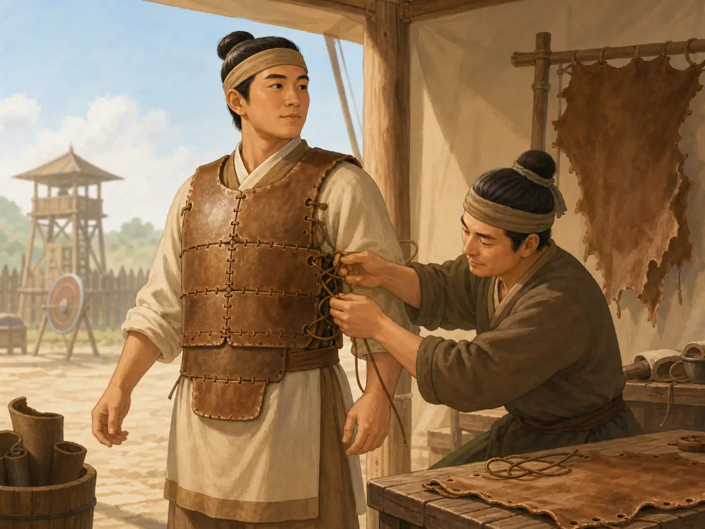
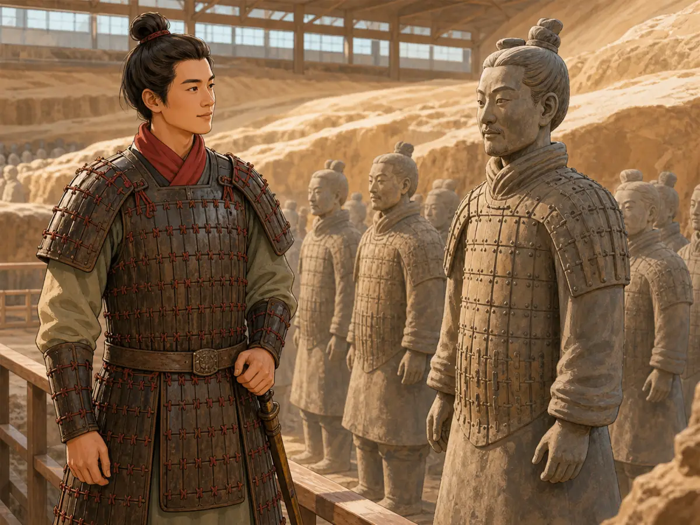
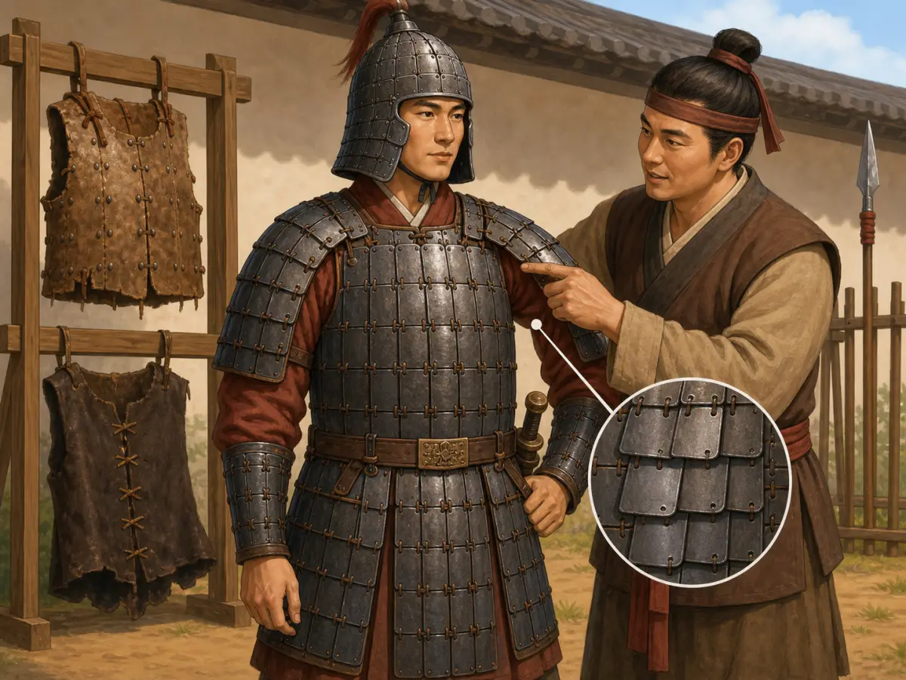

一片一片，怎么变成一身铠甲？
Hundreds of Little Plates: How Ancient Chinese Armor Worked
Page 1
仔细看看Bīngmǎyǒng · 秦始皇陵附近出土的大型陶制军阵。身上的铠甲。站远一点，好像是一件厚厚的甲衣；走近以后，却会发现胸前和肩膀上排着一片又一片的小甲片。
为什么要费这么大劲，用这么多小片拼成一件铠甲？为什么不直接做一块又大又硬的壳，把人保护起来？
只要让士兵动一动，答案就出来了。
Look closely at the armor on a táotǔ · 陶土 · Clay that is shaped and baked until it becomes hard. Warrior. From a few steps away, it may look like one heavy coat. Move closer, though, and you can see rows and rows of small plates covering the chest and shoulders.
Why make armor out of so many little pieces? Why not simply put one large, hard shell around a soldier?
The answer becomes clear as soon as the soldier starts to move.
Page 2
铠甲也得会“弯”
Armor Has to Bend

Craftspeople cut and pierce leather, then connect the armor plates one by one.
士兵当然不会一直直挺挺地站着。他要抬手、转身、奔跑、拉弓，有时还要骑马。铠甲既要保护身体，又不能把人困得动弹不得。
中国古代很多铠甲就是用一片片小甲片解决这个问题的。工匠在甲片上打孔，把它们一排一排摆好，再用绳子编缀起来。有些甲片还会稍微重叠，看起来像屋瓦，也像一层层鱼鳞。
人弯腰的时候，几排甲片可以跟着移动；肩膀抬起来时，甲片也能稍微改变位置。它不像一整块硬板那样，只能保持一个形状。这种铠甲可一点也不好做。每一片都要裁好、打孔，再一片片穿起来。一件铠甲可能需要几百片，有些精细的铠甲甚至更多。不过，这些小片连在一起以后，就能一边保护身体，一边给手臂和腰留下活动的空间。
甲片也不一定都是铁做的。考古发现里有涂漆的皮甲片，也有铜片和铁片。不同的材料在很长时间里一直同时存在，并不是有了铁以后，皮甲就立刻全部消失了。
A soldier does much more than stand still. He has to raise his arms, turn his body, run, climb, pull a bow, or sit on a horse. Armor has to protect him without trapping him inside it.
Many kinds of ancient Chinese armor solved this problem with small plates. Craftspeople punched holes into the plates, arranged them in rows, and joined them with cords. Some plates overlapped a little, like roof tiles or fish scales. When the wearer bent at the waist or moved a shoulder, the rows could shift with his body instead of behaving like one stiff board.
Making armor this way took patience. Every plate had to be shaped, pierced, and connected. A suit might contain hundreds of pieces, and some especially fine examples contained far more. But all those little pieces could work together to make a protective covering that still allowed the wearer to move.
The plates did not all have to be made from the same material. Archaeologists have found ancient Chinese armor pieces made from lacquered leather, bronze, and iron. Leather plates could be shaped and coated with lacquer; metal plates could be hammered and pierced for lacing. Different materials continued to be used for a very long time rather than neatly replacing one another.
Page 3
每个士兵穿的也不一样
Not Every Soldier Needed the Same Armor

A costumed figure follows the plate patterns modeled in clay, while the warriors beside him show different armor and military roles.
兵马俑刚好让我们看到了很多不同的铠甲。两千两百多年前，Qín Shǐhuáng · 建立秦朝、统一中国的第一位皇帝。陵里的工匠用táotǔ · 经过塑形和烧制后变硬的陶土材料。塑出了成千上万名士兵。陶俑身上的铠甲当然也是泥土做的，可是甲片、腰带和肩部的样子都刻得十分仔细。
再多看几个人，就会发现他们并不是穿着同一套“制服”。有些步兵的胸口和肩膀都有甲，有些人身上的甲很少，甚至没有甲。骑在马上的士兵穿得更短一些，方便骑马和活动；驾战车的人和其他士兵，保护身体的方式又可能不一样。
这其实很好理解。骑马的人要抬腿、转身，步兵需要活动的地方又不完全一样。
铠甲不能只想着“越多越好”。还得让穿它的人能做自己的工作。
The Bīngmǎyǒng · 兵马俑 · The life-size clay army found near the tomb of the First Emperor. gives us a wonderful place to look at this idea. The clay soldiers buried near China’s First Emperor were made more than 2,200 years ago. Their armor is sculpted from clay, but the artists carefully showed the rows of plates, belts, shoulder pieces, and different lengths of armor.
And the soldiers do not all look the same. Some infantrymen have armor covering the body and shoulders. Some figures have little or no armor. Cavalrymen riding horses wear shorter armor that leaves them freer to ride, while chariot drivers and other soldiers can have different amounts of protection.
That makes sense. A rider needs to move his legs and twist on horseback. A soldier standing on foot may want protection in different places. Armor was not simply a metal uniform that everyone put on in exactly the same way.
It had to fit the job.
Page 4
皮也能做铠甲
Leather Can Be Armor Too
今天一想到铠甲，我们很容易想到亮闪闪的金属。可是中国古代的铠甲并不总是这个样子。
大英博物馆保存着一件中国古代皮甲片。它用厚皮制成，外面涂了好几层漆，边上还打着许多小孔，可以和别的甲片连起来。更早的考古发现里，也留下了涂漆皮甲的痕迹。
而且，有了铁以后，皮甲也没有马上消失。许多世纪以后，Yúnnán · 中国西南部山地众多、民族文化丰富的省份。大理国的一件实物铠甲，主要部分仍然是涂着红黑漆的硬皮板，同时还用了皮绳和金属零件。
工匠要考虑的不只是“哪一种材料最新”，还要想材料从哪里来、做出来有多重、穿上以后能不能活动，以及这些甲片要怎样连在一起。不同的选择，就会做出不同的铠甲。
Today, when we imagine armor, shiny metal often comes to mind. Ancient Chinese armor did not always look like that.
One surviving armor plate in the British Museum is made from thick leather coated with layers of lacquer. Holes around its edges show how it could be connected to other pieces. Archaeologists have found evidence for lacquered leather armor going back much earlier as well.
Leather did not disappear just because iron became available. Centuries later, an armor suit from Yúnnán · 云南 · A mountainous province in southwestern China with many cultural communities. was still made mostly from rigid leather panels coated in red and black lacquer, with leather laces and some metal parts.
For an armor maker, the question was not simply, “What is the newest material?” It was also: What can I make here? How heavy will it be? Can the wearer move? How will the pieces be tied together? Those choices changed the armor that came out of the workshop.
Page 5
一团铁锈里藏着一件铠甲
A Suit Hidden Inside a Lump of Rust

Rows of laced iron plates form armor that can move with the wearer's body.
有时候，考古学家找到铠甲时，它根本不像一件铠甲。河北满城汉墓出土过一件西汉铁甲。埋在地下两千多年以后，原来的铁片已经锈成了一大团。修复人员只能一层一层记录，再把甲片小心地分开。
最后，他们从这团铁锈里重新拼出了一件由 2859片铁甲片组成的铠甲。它的袖子和下面一些部分还可以随着身体活动。
想一想，一开始摆在考古工作者面前的，只是一团看不出形状的锈铁。可是在两千多年前的工匠手里，那曾经是几千片大小不同、各有位置的小甲片。
单独拿起一片，看起来并没有多厉害。可是把一片接上一片，再接上一片，几百片、几千片一起围住身体，一件真正的铠甲就出现了。远远看过去，它好像是一整件。走近以后，才会发现它真正的秘密，就藏在一片又一片的小甲片里。
Sometimes archaeologists do not discover ancient armor looking like armor at all. When a Western Han iron suit was found in the tomb of Liú Shèng · 刘胜 · A Western Han prince whose tomb contained important archaeological finds. in Hebei, more than two thousand years after it was buried, its iron plates had rusted together into a hard mass. Conservators slowly worked through the lump, recording and separating the pieces one by one.
Eventually, they were able to reconstruct a suit containing 2,859 small iron plates. The sleeves and lower parts had been connected so that they could move as the wearer moved.
Think about how different those two views are. In the tomb, archaeologists first saw a lump of rust. In the workshop long ago, someone had once seen thousands of carefully shaped pieces, each with a particular place to go.
One plate was not much protection. But tie one plate to another, then another, then hundreds more, and something new appeared: armor that could cover a human body and still move with it. From far away, the finished suit could look almost solid. Up close, its secret was all the little pieces.